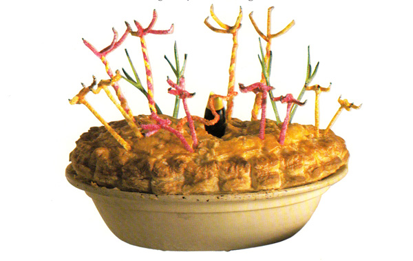

Bird Pie

Description
Once a week, on Wednesdays, the Twits had Bird Pie for supper. Mr Twit caught the birds and Mrs Twit cooked them.
Ingredients
- ¼ cup pearl barley
- 2 tablespoons unsalted butter
- 1 onion, finely chopped
- 1 pound turkey breast, cut into thin strips
- 12 ounces pork sausage meat
- 2 tablespoons chopped fresh sage (optional)
- 5 ounces sour cream
- 5 ounces plain yogurt
- 1 level teaspoon cornstarch, mixed with 1 teaspoon cold water
- ½ cup chicken stock
- 2 eggs, one beaten, one hard-boiled and chopped
- salt and pepper
- 2 ounces ham, chopped
- 9 ounces ready-made puff pastry or instant biscuit dough
- 1 egg yolk
- 8 parsley sprigs with the leaves pinched off or colored pipe cleaners
Steps
- Simmer the pearl barley in water for about 20 minutes, or until soft.
- In a large saucepan melt the butter and gently fry the onion until soft. Add the turkey strips and fry quickly until golden.
- Remove the saucepan from the heat and add the sausage meat. Mix well.
- Add the sage (if using), sour cream, yogurt, cornstarch mixture, chicken stock, and beaten egg. Season to taste with salt and pepper and mix thoroughly.
- Place the blackbird in the middle of the pie dish. Surround with the turkey mixture. Sprinkle on the chopped ham, followed by the chopped egg.
- Preheat oven to 400ºF
- Roll out the pastry to a circle 1/8 inch thick. Make sure it is at least one inch wider than the pie dish all the way around.
- Cut the extra one inch from the pastry in one long circular strip (it should be slightly larger than the rim of the pie dish). Brush the pie dish rim with egg yolk, press the pastry strip down onto the rim, and brush the strip with egg yolk.
- Lift the remaining pastry carefully (you can drape it over the rolling pin) and lay it over the turkey mixture. Cut a slit in the center and ease the blackbird’s beak through the pastry, taking care not to stretch it. Press the pastry down firmly along the rim and cut away any excess. Use a fork to crimp the edge.
- Glaze the pastry with egg yolk and scatter the pearl barely on top. Form a “worm” out of a strip of pastry, glaze it with egg yolk, and place it inside the bird’s beak.
- Refrigerate the pie for ten minutes.
- Bake for 30 to 40 minutes, or until the pastry is well risen and golden brown.
- Stick the stripped parsley stalks, or folded pipe cleaners, in pairs into the pastry crust to look like birds’ legs. If you like, singe the ends to look like toes.